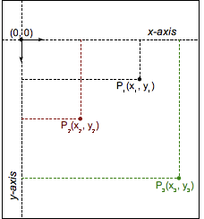
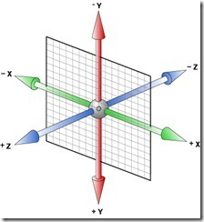

说明：
本ppt利用开源在线html presentation制作框架deck.js编写。为了更流畅的浏览ppt，请使用chrome等主流浏览器
ppt控制键：
- 按← and →键，控制翻页.
- 按P键，弹出光标画笔
- 按B键，显示或隐藏当前slide块
- 按M键，展示所有ppt的缩略图
note: Ctrl/Command and + or - to zoom in and out if slides don’t fit.
browser support 浏览器兼容性
数据来自：http://caniuse.com/( S = Supported; N = not supported; P = partially supported; U = Support unknown; )
- Transition: IE10: S; | Firefox: S; | Chrome: S; | Safari: S; | Opera: S | iOS Safari: S | Opera Mini: N; | Android Browser: S | Blackberry Browse7.0: S;
- 2D transform: IE9: S; | Firefox: S; | Chrome: S; | Safari: S; | Opera: S | iOS Safari: S | Opera Mini: N; | Android Browser: S | Blackberry Browser7.0: S;
- animation: IE10: S; | Firefox: S; | Chrome: S; | Safari: S; | Opera: S | iOS Safari: S | Opera Mini: N; | Android Browser 4.0: S （2.1: P） | Blackberry Browser7.0: S;
- 3D transform: IE10: S; | Firefox: S; | Chrome: S; | Safari: S; | Opera: N | iOS Safari: S | Opera Mini: N; | Android Browser 3.0: S | Blackberry Browser7.0: S;
- Filter Effects: IE10: N; | Firefox18.0: S; | Chrome22: S; | Safari6.0: S; | Opera: N | iOS Safari6.0: S | Opera Mini: N; | Android Browser: N | Blackberry Browser10.0: S;
注意：主流浏览器webkit，firefox，opera的支持，属性名分别为 -webkit-transform，-moz-transform，-o-transform;需要有前缀。
- transition：过渡，表示动画的过程
- transform：变形。
- animation：动画
- Filter Effects：滤镜效果
transition 过渡
transition: <‘transition-property’> || <‘transition-duration’> || <‘transition-timing-function’> || <‘transition-delay’> [, ...]
有四个子项: 属性、持续时间、值变化算法类型、延迟开始时间， 且顺序一定，但每项都可选。
-
开始理解transition各个属性子项
hover me and look at the background color.
transforms 变形
使用过photoshop的人应该知道里面的Ctrl+T自由变换, transform也是同样效果。它可作用于内联(inline)元素和块级(block)元素。功能包含：rotate旋转，skew拉伸，scale压缩，translate偏移。
- 语法: transform-function [transform-function]* | none （默认值为 none）
我们可以看出：所谓的transforms变形就是由多个transform-function组成，即rotate旋转，skew拉伸，scale压缩，translate偏移等变形功能组成。 当然变形会2D transform-function 和 3D transform-function
我们先看下，最常见的四个2D transform-function变形
-
rotate旋转
允许你通过传递一个度数值来转动一个对象；
hover me to Rotate + 360度
-
skew拉伸
允许你通过传递一个度数值来拉伸一个对象；
-
scale压缩
允许你通过传递一个(x%, y%)值来压缩一个对象；
-
translate偏移
允许你通过传递一个(x, y)来偏移一个对象；
hover me to 偏移(10px, 20px;)
理解translate偏移，就得知道2D的坐标系：

注意：
transform-origin 变形原点
使当前元素围绕着设置的原点变形或旋转，该属性只有在设置了transform属性的时候起作用。
最多可设置原点(x, y, z)三个方向值，默认值为： 50% 50% 0。 
- X轴的可选值有: length | percentage | left/right/center
- Y轴的可选值有: length | percentage | top/bottom/center
- Z轴的可选值有: length | percentage
-
设置变形原点（right bottom）后的旋转
hover me to Rotate + 360度
-
设置变形原点（right bottom）后的拉伸
-
设置变形原点（right bottom）后的压缩
hover me to Rotate + 360度
-
设置变形原点（right bottom）后的偏移
-
Matrix 矩阵
哈哈，请相信我，当你看到这里时，你可以把之前的四个transform-function忘记了，因为Matrix()是他们的基础实现。理解了Matrix()才是真正王道。
CSS3中的矩阵指的是一个方法，书写为matrix()和matrix3d(), 前者是元素2D平面的移动变换(transform)，后者则是3D变换。2D变换矩阵为3*3, 如上面矩阵示意图；3D变换则是4*4的矩阵。我们这里先介绍2D matrix()
之前说了，其实无论是旋转还是拉伸什么的，本质上都是应用的matrix()方法实现的（修改matrix()方法固定几个值），只是类似于transform:rotate这种表现形式，我们更容易理解，记忆与上手。
语法：matrix(a, b, c, d, e, f) 对应的矩阵如下：

3D transform
我们之前介绍了2D transform,现在怎么设置 3D transform.
transform-style
通过该属性来决定指定元素的子节点是在2D还是3D坐标系中。
语法: flat | preserve-3d 。 默认值为 flat。

之前我们看了四种2D transform-function变形，现在我们再看看3D的transform-function变形
perspective(透视)：该属性会设置查看者的位置，并将可视内容映射到一个视锥上，继而投影到一个 2D 视平面上。如果不指定透视，则 Z 空间中的所有点将平铺到同一个 2D 视平面中，并且变换结果中将不存在景深概念。简单一点理解就是，perspective的值模拟的是用户观看动画时与动画中心面的焦距，值越小，看到的效果越明显()，越大，动画效果越不明显。当perspective为0的时候，感觉就像是你的眼睛紧贴着动画中心面看到的效果(看到的是平面动画)
可以调整镜头与平面位置：
a) perspective属性设置镜头到元素平面的距离。所有元素都是放置在z=0的平面上。比如perspective(300px)表示，镜头距离元素表面的位置是300像素。
b) perspective-origin属性规定了镜头在平面上的位置。默认是放在元素的中心。
←
→
/
#